3 pokoje*2 łazienki*taras*komórka lokatorska
ul. Bukowiecka, Warszawa Elsnerów
995 000 PLN
65.9 m2
3 pokoje
3 piętro
WAŻNE: Jako biuro nieruchomości nie pobieramy przy tej transakcji wynagrodzenia od Kupującego.
OPIS MIESZKANIA I BUDYNKU:
Mieszkanie znajduje się na Osiedlu Wilno, usytuowane jest na 3 piętrze w trzypiętrowym bloku z windą. Budynek został oddany do użytkowania w 2022 roku przez dewelopera “Dom Development”. Budynek wyposażony jest w windę.
- Powierzchnia lokalu to 65,9 mkw. Składają się na nią:
- salon z aneksem kuchennym (24,65 mkw)
- pokój 1 (11,85 mkw)
- pokój 2 (11,43 mkw)
- łazienka z wanną (4,6 mkw)
- łazienka z prysznicem (2,49 mkw)
- hol (7,97 mkw)
Do mieszkania przynależy taras o powierzchni 6,8 mkw, na który można wyjść z salonu. Mieszkanie jest umeblowane, wyposażone i gotowe do wprowadzenia. Zostało wykończone przez właściciela “pod siebie” z wykorzystaniem wysokiej jakości materiałów i rozwiązań.
Na podłodze w pokojach oraz holu położone zostały wodoodporne panele “QUICK-STEP CLM 1487” w kolorze dąb naturalny nocny z technologią Scratch Guard charakteryzujące się nawet 10 krotnie większą odpornością na zarysowania, niż podłogi bez niej. Z kolei na podłodze w łazienkach zostały położone płytki “Cerrard Tacoma silver 59,7x59,7” (łazienka z wanną) .
Do wykończenia obu łazienek została wykorzystana wysokiej jakości armatura i materiały. Łazienka z wanną: bateria wannowo-natryskowa “Grohe Bauloop”, wanna “Cersanit Nao” o wymiarach 160x 70, bateria umywalkowa chrom “Grohe Bauloop”, przycisk do wc “Grohe Skate Cosmopolitan”, glazura na ścianie “Cerrard Laroya dust 17x89,7”.
Łazienka z prysznicem: bateria natryskowa “Grohe Euphoria”, kabina prysznicowa “Radaway Euphoria, umywalka “set moduo”, bateria umywalkowa “Grohe Bauloop”, wc-podwieszany “cersanit city”, przycisk do wc “Grohe Skate Cosmopolitan”, glazura na ścianie “Cerrard Laroya dust 17x89,7”.
W mieszkaniu zostały zamontowane drzwi wewnętrzne “PORTA FOCUS 5.C”, klamki “WUATRO SLIM” ze stali nierdzewnej oraz listwy przypodłogowe “VOX ESPUMO”.
Ściany zostały pomalowane farbą “Dekoral Professional POLINIT 3000 HS” w kolorze NCS S 1000-N.
Kuchnia posiada pełne wyposażenie AGD w skład którego wchodzi lodówka z zamrażarką, zmywarka, piekarnik, płyta indukcyjna, mikrofalówka. Z kolei w łazience znajduje się cicho pracująca pralko-suszarka.
Fronty kuchenne są lakierowane w białym półmacie.
Mieszkanie wyposażone jest w dwuosobowe łóżko z materacem ortopedycznym, łóżko pojedyncze, szafę, szafkę nocną, otwarty regał oraz lustro. W salonie znajduje się kanapa, fotel, stół z dwoma krzesłami, stolik kawowy, szafka RTV, regał na książki, regał na płyty CD oraz dwie lampy.
Lokal jest bardzo dobrze doświetlony ze względu na ekspozycję okien południowo-zachodnią (SW) oraz wschodnią (E).
Osiedle, na którym znajduje się budynek jest zamknięte, monitorowane i objęte ochroną. osoby nieproszone bez posiadania dostępu (kody wejściowe, pestki) nie wejdą na jego teren.
Mieszkańcy budynku mają możliwość korzystania z ogólnodostępnej wózkowni.
LOKALIZACJA:
Osiedle, na którym znajduje się budynek jest zamknięte, monitorowane i objęte ochroną. osoby nieproszone bez posiadania dostępu (kody wejściowe, pestki) nie wejdą na jego teren. Mieszkańcy budynku mają możliwość korzystania z ogólnodostępnej wózkowni.
Osiedle Wilno, na którym mieści się nieruchomość znane jest z niskiej i kameralnej zabudowy, doskonale zostało skomunikowane z centrum miasta:
300 metrów do przystanku autobusowego “Plac Ostrej Bramy” z którego kursują linie autobusowe 156, 170 oraz N16 (8 minut do stacji Metro Trocka oraz 12 minut do Dworca Kolejowego Warszawa Wschodnia)
600 metrów do stacji PKP W-wa Zacisze Wilno (5 minut do stacji metra Warszawa Wileńska)
Na osiedlu znajdują się liczne restauracje, sklepy, punkty usługowe, przychodnia oraz żłobki, co zapewnia wygodę i komfort codziennego życia. W okolicy znajdują się galerie handlowe Atrium Targówek oraz Galeria Wileńska.
Na spacer można się wybrać do pobliskiego lasu lub nad zalew Bardowskiego.
KOMUNIKACJA:
W ciągu 6 minut pieszo można dotrzeć do kolejki miejskiej stacja “PKP Zacisze Wilno”, która została oddana do użytku w związku z potrzebami mieszkańców “Osiedle Wilno”. Z tej stacji dojazd pociągiem do Dworca Wileńskiego trwa zaledwie 5 minut. Pociągi regularnie jeżdżą co około 10 minut. W pobliżu budynku (350 metrów) znajduje się przystanek autobusowy “Plac Ostrej Bramy” skąd odjeżdżają linie autobusowe 170 oraz 156. Dojazd do ścisłego centrum (np. do stacji metro “Świętokrzyska”) od wyjścia z domu zajmuje około 30 minut.
Budynek znajduje się w lokalizacji pozwalającej na przyjazny dojazd do Uniwersytetu SWPS oraz Akademii Leona Koźmińskiego.
WARUNKI TRANSAKCJI:
Prawo do lokalu to pełna własność z założoną księgą wieczystą.
Cena: 995 000 zł za lokal (W cenę nie jest wliczone wyposażenie ruchome oraz sprzęt AGD widoczne na zdjęciach i w opisie. Istnieje możliwość, aby większość wyposażenia właściciel zostawił w lokalu po indywidualnym ustaleniu szczegółów z osobą kupującą).
Dodatkowo płatne miejsce postojowe w hali garażowej w cenie 45 000 zł.
Do lokalu przynależy murowana komórka lokatorska o powierzchni 3,25 mkw, do której wejście jest z poziomu hali garażowej. Cena komórki: 15 000 zł.
Istnieje możliwość zakupu nieruchomości przy użyciu kredytu hipotecznego. W przypadku chęci finansowania zakupu kredytem hipotecznym możemy polecić zaufanego doradcę kredytowego, który bezpłatnie wybierze dla kupującego najlepszą ofertę na rynku.
Kontakt telefoniczny: +48 609 540 480
Zapraszam do kontaktu zainteresowane osoby.
"Powyższa oferta ma charakter informacyjny i nie stanowi oferty handlowej w rozumieniu art. 66 &1 Kodeksu Cywilnego".
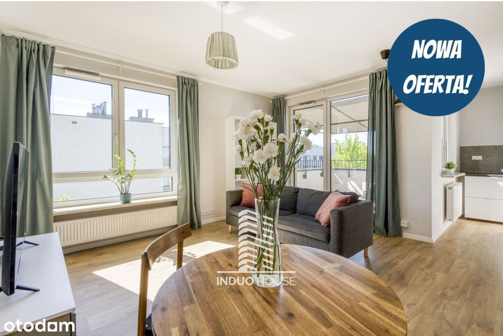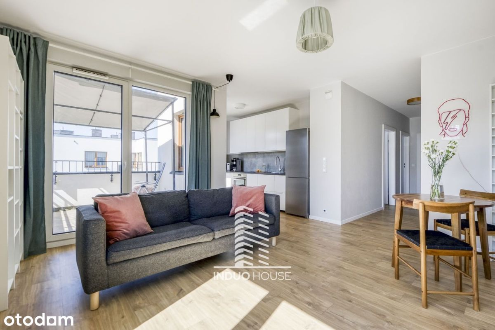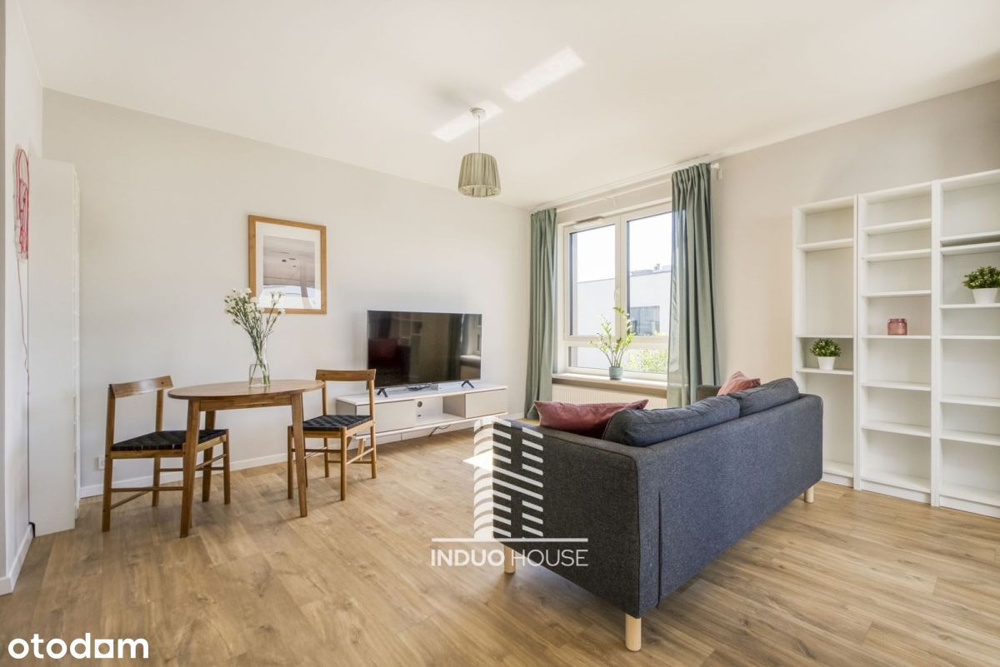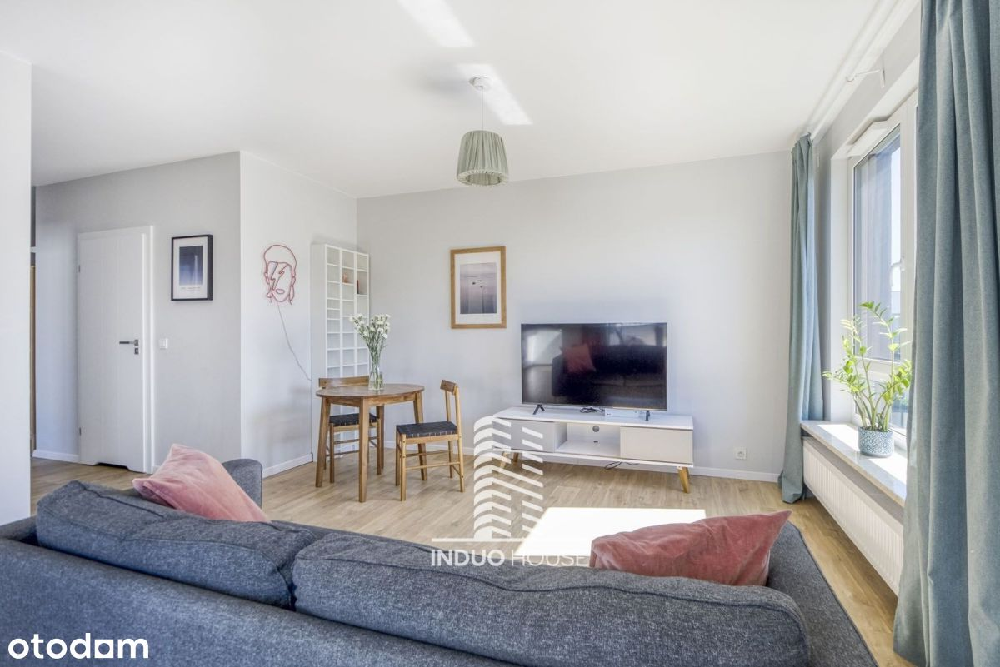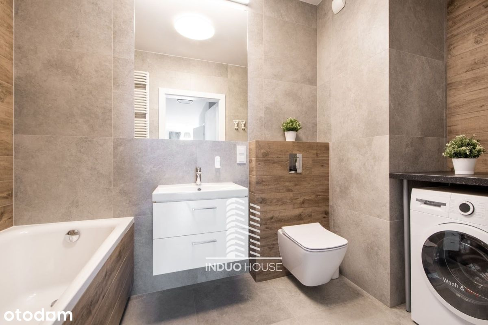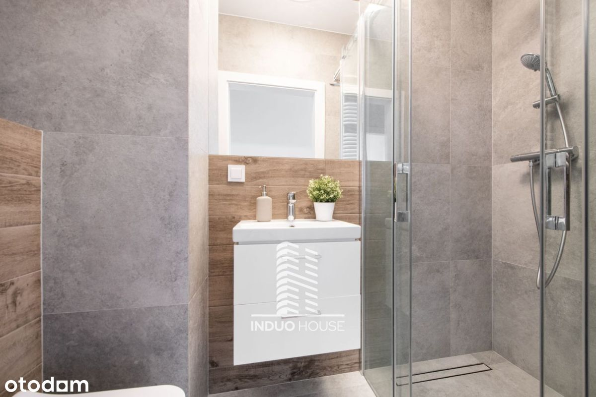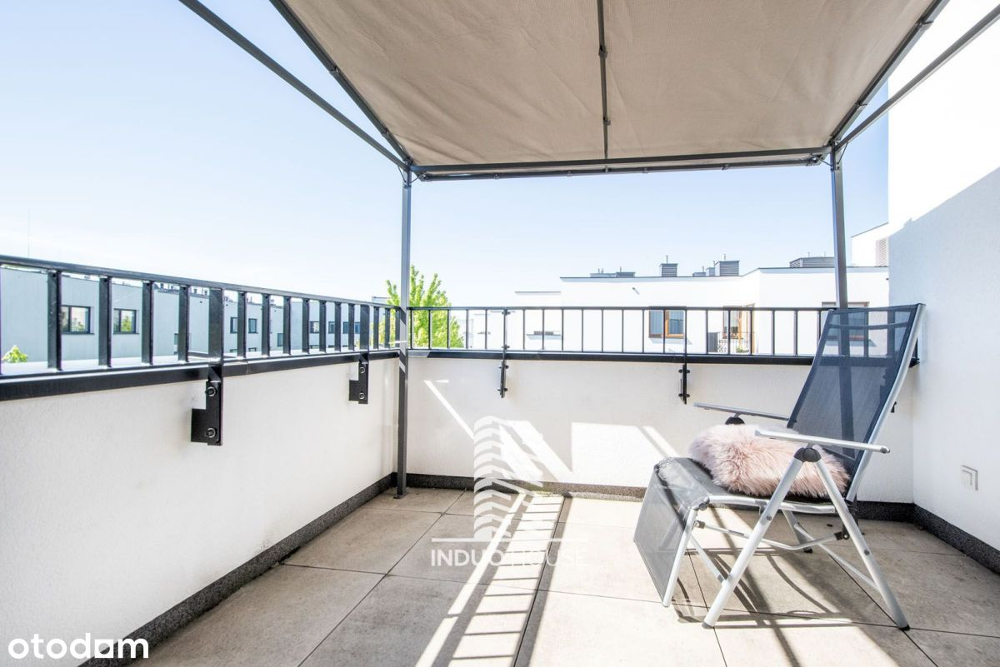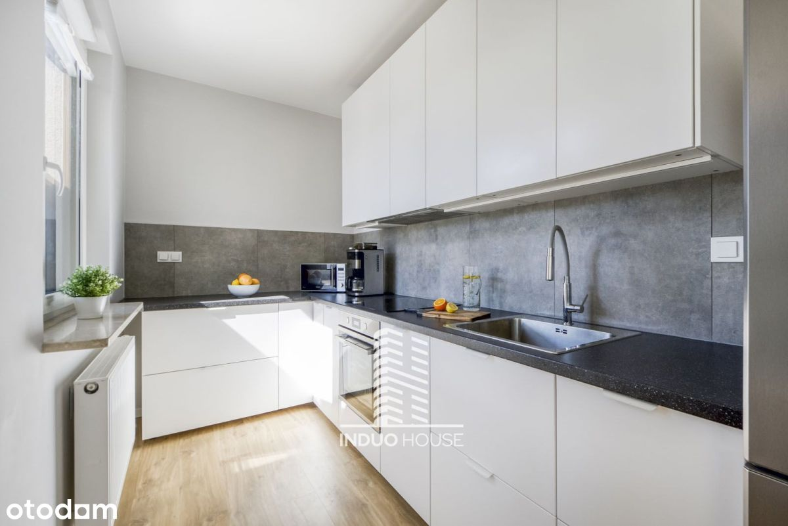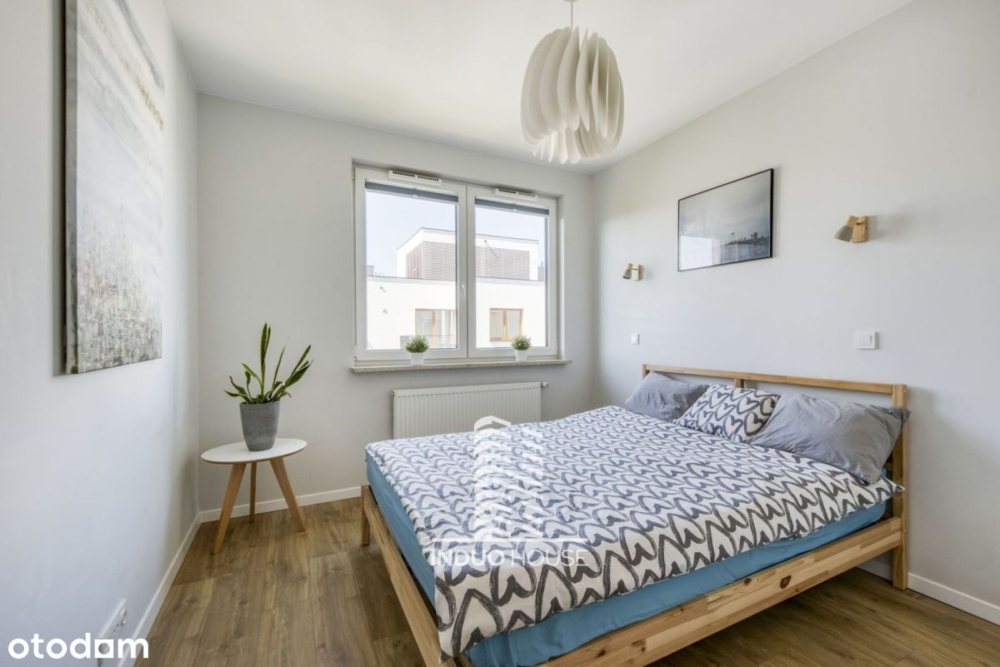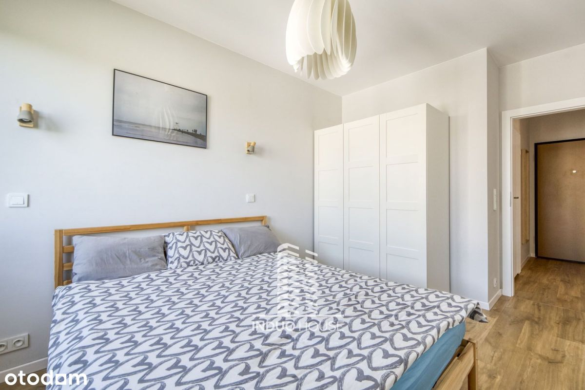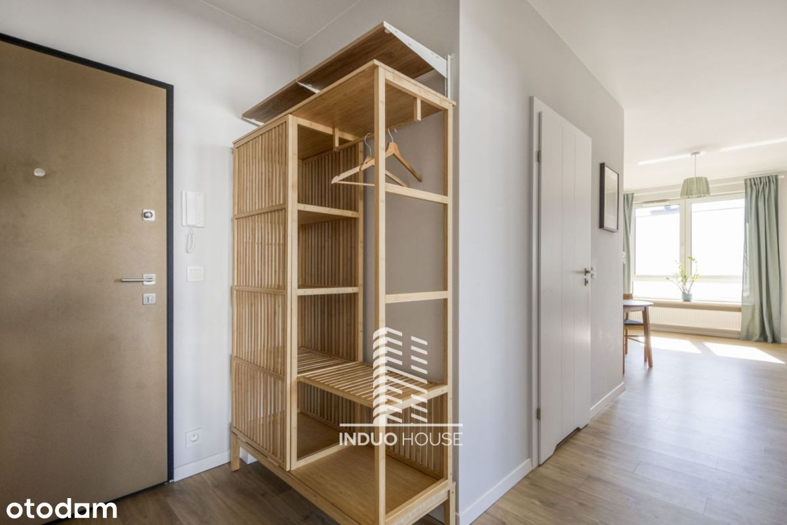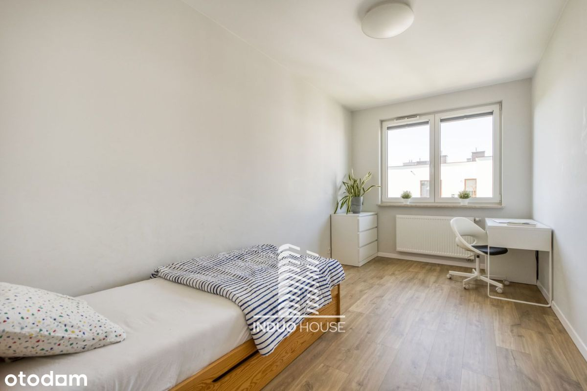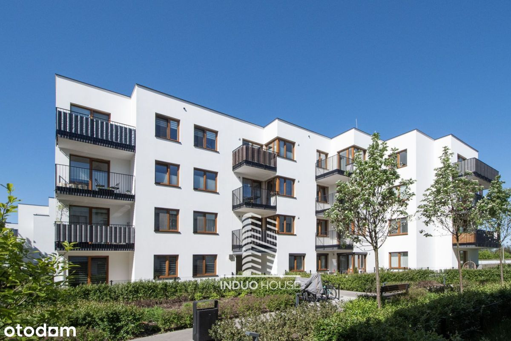